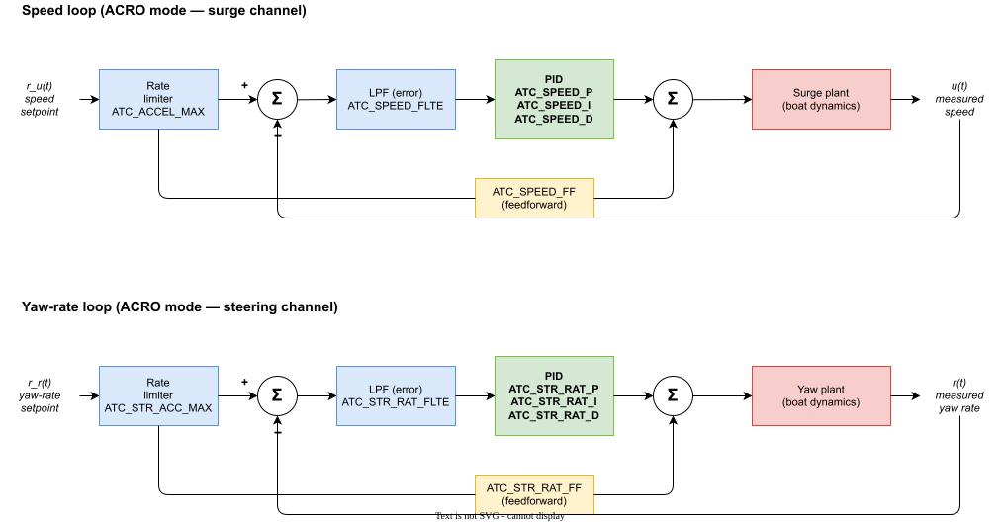

ATC Parameter Reference — Speed and Steering
Per-parameter reference for the ATC_* controllers used in the USV labs
← Back to Autopilot · Parameter overview · Stabilization layer
Reference for the ATC_* parameters that govern the closed-loop speed and yaw-rate controllers used in this course’s USV labs (ACRO mode). Companion to the higher-level stabilization layer page, which explains how these parameters fit into the loop architecture; this page is the dense per-parameter look-up table with units, ranges, vehicle values, and source-code anchors.
- Authoritative parameter list (firmware version-tracked): ardupilot.org/rover/docs/parameters.html
- Source of truth for defaults / ranges / behavior:
libraries/APM_Control/AR_AttitudeControl.cppon GitHub
Defaults below are taken from the AR_AttitudeControl.cpp source on master. Where our test vehicle differs from the source default, the vehicle value is shown as Vehicle: and reflects the lab baseline file utils/ardu_params/2026_05_06_baseline_3.2.param.
Architecture overview
ACRO mode runs two independent PID loops, one per channel. Both share the same structure: a command rate limiter at the input, a low-pass filter on the error, a PID controller, and a feed-forward term that bypasses the PID and adds at the output.

In higher modes (HOLD, LOITER, AUTO, etc.) an outer heading loop (ATC_STR_ANG_P) wraps the yaw-rate loop, converting heading error to a desired yaw rate. ACRO bypasses that outer loop — the pilot stick commands yaw rate directly.
Implementation references
The PID-internal parameters (_P, _I, _D, _FF, _IMAX, _FLT*, _SMAX, _PDMX, _D_FF, _NTF, _NEF) are not implemented in AR_AttitudeControl.cpp directly. That file holds two AC_PID instances — one for the steering-rate loop (line 116) and one for the speed loop (line 182) — and the _P / _I / etc. parameters are sub-group fields of those AC_PID instances. The actual P/I/D/FF arithmetic runs once per cycle in AC_PID::update_all() in AC_PID.cpp.
Per-parameter Source: links below point to:
- The
AP_GROUPINFOmacro that declares the parameter (its name, range, storage) - The call site (function or line) where the parameter’s value actually changes behavior
All links are pinned to master. Line numbers can drift over time; if a link doesn’t land where described, search the file for the parameter name.
Speed Control Parameters
ATC_SPEED_P
- Description: Converts speed error (m/s) to normalized motor output. Proportional gain.
- Units: (motor effort)/(m/s) — output ∈ [−1, +1]
- Range: 0.010 – 2.000 Default: 0.20 Vehicle: 1.0
- Notes: Standard \(K_p\) in the speed PID. Increasing it shortens rise time but increases overshoot and noise sensitivity. Vehicle ships with \(K_p=1.0\), five times the source default — likely tuned for the marine drag profile.
- Source:
Pdefined at AC_PID.cpp:7 → consumed inAC_PID::update_all().
ATC_SPEED_I
- Description: Integrates speed error over time to drive steady-state error to zero.
- Units: (motor effort)/(m/s · s)
- Range: 0.000 – 2.000 Default: 0.20 Vehicle: 0.2
- Notes: \(K_i\) in the speed PID. Required when the plant has unmodeled drag or a constant disturbance (current, wind). The I-term’s contribution to the controller output (i.e. the integrator state times \(K_i\)) is clamped to ±
ATC_SPEED_IMAX— this is the classic anti-windup mechanism. It does not clamp the summed P+I+D output (that’sATC_SPEED_PDMX/_SMAX’s job). You can verify in the logs:PIDA_Iis the clamped I-term output, separate fromPIDA_P,PIDA_D. - Source:
Idefined at AC_PID.cpp:11 → integrator updated inAC_PID::update_all().
ATC_SPEED_D
- Description: Acts on rate of change of speed error.
- Units: (motor effort)/(m/s · s)
- Range: 0.000 – 0.400 Default: 0.00 Vehicle: 0
- Notes: Rarely useful for surge speed control on a USV — speed is GPS-noisy and derivative kick is undesirable. Leave at 0 unless you have a specific reason.
- Source:
Ddefined at AC_PID.cpp:15 → derivative computed inAC_PID::update_all().
ATC_SPEED_FF
Description: Feed-forward gain — output proportional to the setpoint (not the error).
Units: (motor effort)/(m/s)
Range: 0.000 – 0.500 Default: 0.0 Vehicle: 0
Notes: Enables predictive control: if you know empirically that 50 % throttle produces 2 m/s steady speed, an FF of 0.25 gives the right baseline output before the PID does any work. Lets you reduce \(K_p\) and \(K_i\) while keeping fast tracking. Conceptually equivalent to inverting the steady-state plant gain.
ArduRover actually exposes two ways to add a setpoint-proportional baseline to the throttle, and both add together at the output sum:
ATC_SPEED_FF— direct FF gain in the PID block. Output getsATC_SPEED_FF × desired_speedadded.CRUISE_THROTTLE/CRUISE_SPEED— the “throttle baseline” mechanism documented in the upstream Cruise Throttle and Cruise Speed section. When both are non-zero, the controller adds(CRUISE_THROTTLE / 100) × (desired_speed / CRUISE_SPEED)to the output. The two cruise parameters are an empirical calibration point: drive at a steady throttle, log the speed, store the pair, and the controller uses the implied slope as a feedforward.
Both produce the same kind of contribution (output ∝ setpoint); they differ in how the slope is parameterized. For the Lab 2 Base case we zero both (
ATC_SPEED_FF = 0,CRUISE_THROTTLE = 0) so the response reflects only the PID gains.Source:
FFdefined at AC_PID.cpp:19 → applied inAC_PID::update_all(). Direct read inAR_AttitudeControl::get_throttle_out_speed()at line 321.
ATC_SPEED_IMAX
- Description: Anti-windup clamp on the integral term’s output contribution.
- Range: 0.000 – 1.000 Default: 1.00 Vehicle: 1.0
- Notes: Prevents integral windup during saturation (e.g. low battery, prop fouled).
IMAXis in the same units as the PID output: normalized motor effort. The total controller output drives the throttle channel in [−1, +1];IMAXclamps the magnitude of just the I-term’s contribution to that output (i.e., the integrator state multiplied by \(K_i\)). With the defaultIMAX = 1.0, the I term alone is permitted to command up to ±100 % motor effort. - Source:
IMAXdefined at AC_PID.cpp:23 → integrator clamping inAC_PID::update_all().
ATC_SPEED_FLTT / ATC_SPEED_FLTE / ATC_SPEED_FLTD
Description: Cutoff frequencies (Hz) for the low pass filters on the target, error, and derivative signals respectively.
Range: 0.000 – 100.000 Hz Default (FLTE): 10 Hz Default (FLTT, FLTD): 0 (off)
Vehicle: FLTT=0, FLTE=10, FLTD=0
Notes: Three independent low-pass filters, each acting on a different signal in the PID loop:
FLTT(target) smooths the commanded setpoint before it enters the loop. Use it when the source of the setpoint is itself noisy or contains undesired high-frequency content.FLTE(error) attenuates measurement noise on the error signal before P, I, and D act on it. This is usually the most useful of the three when the feedback sensor is noisy.FLTD(derivative) limits the bandwidth of the D-term so it does not amplify high-frequency sensor noise into the actuator. Only matters whenATC_SPEED_D ≠ 0— ifD = 0, the derivative path multiplies by zero and there is nothing to filter.
Lab default
FLTE = 10Hz is well above the surge dynamics (~0.5–2 Hz bandwidth) so it does not affect step-response analysis. SetFLTT > 0to soften an aggressive stick command into the loop; leaveFLTD = 0unlessATC_SPEED_D > 0.Implementation. All three are first-order discrete IIR low-pass filters, implemented in
LowPassFilter.cpp. The stored parameter value is the −3 dB cutoff in Hz; the filter coefficient is computed each cycle from the cutoff and the loop period. A cutoff of0disables the filter (no smoothing — the signal passes through unchanged).Why a low-pass filter here but a rate limiter on the input (
ATC_ACCEL_MAX)? Filters and rate limiters solve different problems:- A rate limiter is a non-linear element that bounds the slope of a signal — it slews from one value to another at a fixed maximum rate. Used at the input so the PID never sees a setpoint demanding infinite acceleration.
- A low-pass filter is a linear element that bounds the bandwidth of a signal — it averages over time, attenuating high-frequency content while preserving DC gain. Used to suppress noise, which is a frequency-domain problem.
Rate-limiting noise wouldn’t help (noise isn’t a slope problem). Filtering a step command would slow everything, including the part of the response the controller is trying to track. Each tool is matched to the kind of signal at that point in the loop.
Source:
FLTTat AC_PID.cpp:31,FLTEat AC_PID.cpp:35,FLTDat AC_PID.cpp:39 → filters applied inAC_PID::update_all().
ATC_SPEED_FILT (legacy)
- Description: Pre-FLTT/FLTE/FLTD filter parameter — superseded by the three split filters above.
- Default: 10 Hz
- Notes: Older ArduPilot firmware exposed a single
ATC_SPEED_FILTparameter that set the cutoff for the entire filter chain. In newer firmware that single parameter was replaced by three —FLTT,FLTE,FLTD— so the target, error, and derivative paths can be filtered at different cutoffs (or disabled independently).ATC_SPEED_FILTis retained only to load.paramfiles saved by old firmware versions; in current firmware it is effectively an alias forFLTE. New configurations should use the three replacement parameters directly and ignore the legacy one. - Source: Legacy parameter — typically aliased to FLTE. Search
AC_PID.cppforFILTto see the alias / migration logic.
ATC_SPEED_SMAX
- Description: Slew rate limit on the PID output to prevent oscillation when control authority is exceeded.
- Range: 0 – 200 Default: 0 (disabled) Vehicle: 0
- Notes: Advanced anti-oscillation safety net. Leave disabled for tuning experiments — it can mask the controller’s actual closed-loop behavior.
- Source:
SMAXdefined at AC_PID.cpp:43 → slew limiter applied inAC_PID::update_all().
ATC_SPEED_PDMX
- Description: Maximum combined P+D output magnitude.
- Default: 0 (disabled) Vehicle: 0
- Notes: Saturates the proportional + derivative path before the I term is added, so the integrator can still trim small offsets even when P is railed. Not relevant for our experiments.
- Source:
PDMXdefined at AC_PID.cpp:49 → P+D clamping inAC_PID::update_all().
ATC_SPEED_D_FF
- Description: Feed-forward gain on the derivative of the setpoint.
- Default: 0 Vehicle: 0
- Notes: Predicts the motor effort needed to follow a changing setpoint (acceleration). Useful only with smooth setpoint trajectories.
- Source:
D_FFdefined at AC_PID.cpp:54 → applied inAC_PID::update_all().
ATC_SPEED_NTF / ATC_SPEED_NEF
- Description: Indices into the vehicle’s notch filter bank for the target and error signals.
- Default: 0 (no notch)
- Notes: Used to suppress narrow-band resonances (motor cogging, structural modes). Not needed for boats.
- Source:
NTFat AC_PID.cpp:60,NEFat AC_PID.cpp:65 → consumed inAC_PID::update_all().
ATC_ACCEL_MAX
- Description: Maximum commanded acceleration applied to the speed setpoint via a rate limiter.
- Units: m/s² Range: 0 – 10 Default: 1.0 Vehicle: 1.0
- Notes: Critical for the lab. A nonzero value means the PID never sees a true step input — the setpoint ramps at this rate. To capture the closed-loop step response, set this to 0 (disables the limiter; setpoint follows the stick instantly). See Section Filtering and Rate-Limiting in the lab chapter.
- Source: Defined at AR_AttitudeControl.cpp:189 → consumed in
AR_AttitudeControl::get_desired_speed_accel_limited()(lines 330, 347).
ATC_DECEL_MAX
- Description: Maximum deceleration; if 0, falls back to
ATC_ACCEL_MAX. - Units: m/s² Range: 0 – 10 Default: 0 Vehicle: 0
- Notes: Allows asymmetric ramping (slower stop than start). Default 0 means symmetric.
- Source: Defined at AR_AttitudeControl.cpp:205 → consumed in
AR_AttitudeControl::get_desired_speed_accel_limited()(lines 348, 357).
ATC_BRAKE
- Description: When enabled, the controller can command negative motor output to actively decelerate.
- Range: 0 / 1 Default: 1 Vehicle: 1
- Notes: Required for boats with reversible ESCs. Without it, deceleration relies entirely on hydrodynamic drag.
- Source: Defined at AR_AttitudeControl.cpp:198 → consumed in
AR_AttitudeControl::get_throttle_out_speed()(line 326).
ATC_STOP_SPEED
- Description: Below this speed, motor output is forced to zero.
- Units: m/s Range: 0.0 – 0.5 Default: 0.1 Vehicle: 0.1
- Notes: Prevents motor jitter / arming-detect issues at near-zero speeds. Active only in modes that rely on the controller deciding when “stopped” (HOLD, AUTO).
- Source: Defined at AR_AttitudeControl.cpp:211 → consumed in
AR_AttitudeControl::get_throttle_out_stop()(line 340).
Steering / Yaw-Rate Control Parameters
ATC_STR_RAT_P
- Description: Converts yaw-rate error (rad/s) to normalized rudder/skid-steer output.
- Range: 0.000 – 2.000 Default: 0.20 Vehicle: 0.2
- Notes: \(K_p\) for the yaw-rate loop. Same role as
ATC_SPEED_Pbut in the steering channel. - Source:
Pdefined at AC_PID.cpp:7 → consumed inAC_PID::update_all().
ATC_STR_RAT_I
- Description: Integral gain for yaw-rate error.
- Range: 0.000 – 2.000 Default: 0.20 Vehicle: 0.2
- Notes: Eliminates steady-state yaw-rate error from rudder asymmetry, current, or unbalanced thrust. Anti-wound to ±
ATC_STR_RAT_IMAX. - Source:
Idefined at AC_PID.cpp:11 → integrator updated inAC_PID::update_all().
ATC_STR_RAT_D
- Description: Derivative gain on yaw-rate error.
- Range: 0.000 – 0.400 Default: 0.00 Vehicle: 0
- Notes: Sometimes useful to damp ringing on aggressive turns, but yaw-rate is already a derivative (of heading) so adding D acts on \(\ddot\psi\) — very noisy. Use sparingly.
- Source:
Ddefined at AC_PID.cpp:15 → derivative computed inAC_PID::update_all().
ATC_STR_RAT_FF
- Description: Feed-forward gain — rudder output proportional to the desired yaw rate.
- Range: 0.000 – 3.000 Default: 0.20 Vehicle: 2.0
- Notes: Major contribution to control authority on USVs. The vehicle ships with FF=2.0 (10× source default), reflecting that for a single-rudder boat, the steady rudder needed to hold a given yaw rate is approximately linear in the desired rate. For the lab step-response experiment, set FF=0 so the response reflects the PID gains alone (per the lab chapter procedure table).
- Source:
FFdefined at AC_PID.cpp:19 → applied inAC_PID::update_all(). Direct read inAR_AttitudeControl::get_steering_out_rate()at line 283.
ATC_STR_RAT_IMAX
- Description: Anti-windup clamp for the I term.
- Range: 0.000 – 1.000 Default: 1.00 Vehicle: 1.0
- Source:
IMAXdefined at AC_PID.cpp:23 → integrator clamping inAC_PID::update_all().
ATC_STR_RAT_FLTT / ATC_STR_RAT_FLTE / ATC_STR_RAT_FLTD
- Description: LPF cutoffs for target, error, and derivative paths.
- Range: 0–100 Hz Default (FLTE): 10 Hz Vehicle: FLTT=0, FLTE=10, FLTD=0
- Notes: IMU yaw rate is much faster than GPS speed, so these filters matter more here than on the speed channel. Default FLTE=10 Hz attenuates IMU sensor noise without affecting yaw-rate dynamics (~1–5 Hz typical bandwidth).
- Source:
FLTTat AC_PID.cpp:31,FLTEat AC_PID.cpp:35,FLTDat AC_PID.cpp:39 → applied inAC_PID::update_all().
ATC_STR_RAT_FILT (legacy)
- Description: Pre-split filter parameter, superseded.
- Default: 10 Hz
- Source: Legacy parameter — see
AC_PID.cppand search forFILTto see the alias / migration logic.
ATC_STR_RAT_SMAX / ATC_STR_RAT_PDMX / ATC_STR_RAT_D_FF / ATC_STR_RAT_NTF / ATC_STR_RAT_NEF
Same role as the equivalent ATC_SPEED_* parameters above. All default to 0 (disabled) on the vehicle. - Source: All defined in AC_PID.cpp — SMAX:43, PDMX:49, D_FF:54, NTF:60, NEF:65 → consumed in AC_PID::update_all().
ATC_STR_ANG_P
- Description: Outer-loop heading-hold P gain. Converts heading error (rad) to desired yaw rate (rad/s).
- Range: 1.000 – 10.000 Default: 2.0 Vehicle: 2.0
- Notes: Not active in ACRO mode. Used by HOLD, LOITER, AUTO, etc. where the autopilot is responsible for heading. Together with the yaw-rate PID it forms the cascaded heading controller. In our class the yaw-rate loop is the inner loop; this parameter wraps it for higher modes.
- Source: Defined at AR_AttitudeControl.cpp:158 → consumed in
AR_AttitudeControl::get_turn_rate_from_heading()at line 241.
ATC_STR_ACC_MAX
- Description: Maximum commanded yaw acceleration applied as a rate limiter on the yaw-rate setpoint.
- Units: deg/s² Range: 0 – 1000 Default: 120 Vehicle: 120
- Notes: Yaw analogue of
ATC_ACCEL_MAX. Set to 0 for the lab step-response experiment so the PID sees a true step from the steering stick. - Source: Defined at AR_AttitudeControl.cpp:167 → consumed in
AR_AttitudeControl::get_steering_out_rate()(lines 261, 268).
ATC_STR_DEC_MAX
- Description: Yaw deceleration limit; if 0 falls back to
ATC_STR_ACC_MAX. - Units: deg/s² Range: 0 – 1000 Default: 0 Vehicle: 0
- Source: Defined at AR_AttitudeControl.cpp:398 → consumed in
AR_AttitudeControl::get_turn_rate_from_heading()at line 254.
ATC_STR_RAT_MAX
Description: Hard cap on the commanded yaw rate.
Units: deg/s Range: 0 – 1000 Default: 120 Vehicle: 36
Notes: The vehicle’s 36 deg/s cap matches the
ACRO_TURN_RATEparameter — both default to the value advertised on the RC stick at full deflection. Reduces sensitivity of the steering stick. Increase if you want a more responsive boat (and better step amplitude in your data).Implementation. Applied as a hard saturation on the yaw-rate setpoint before it enters the PID loop (see
AR_AttitudeControl::get_steering_out_rate()at line 272). If the stick ×ACRO_TURN_RATEasks for, say, 50 deg/s butATC_STR_RAT_MAX = 36, the loop sees 36 deg/s as its setpoint — the stick effectively saturates earlier than its full deflection would suggest. It is not a rate-of-change limiter (that role isATC_STR_ACC_MAX); a sudden full-stick step still produces a step setpoint, just at the capped magnitude.Source: Defined at AR_AttitudeControl.cpp:176 → consumed in
AR_AttitudeControl::get_steering_out_rate()at line 272.
ATC_TURN_MAX_G
Description: Maximum turning acceleration (lateral g) used to prevent rolling/slipping.
Units: g Range: 0.1 – 10 Default: 0.6 Vehicle: 0.6
Notes: Coordinated-turn safety: at high speeds the autopilot reduces achievable yaw rate to keep lateral acceleration ≤ this value.
Easy to confuse with
ATC_ACCEL_MAXbecause both have “acceleration” in their semantics, but they limit different things and are not analogous:ATC_ACCEL_MAXbounds the time derivative of the speed setpoint (m/s²). It is a rate limiter — it shapes how fast the setpoint can change.ATC_STR_RAT_MAXis a fixed cap on the yaw-rate setpoint (deg/s).ATC_TURN_MAX_Gis a speed-dependent cap on the yaw rate, derived from the lateral (centripetal) acceleration in a turn. In a coordinated turn the lateral acceleration is approximately \(v \cdot \omega\) (forward speed times yaw rate), so capping that to \(g \cdot \texttt{ATC\_TURN\_MAX\_G}\) tightens the allowable yaw rate as the boat moves faster: \(\omega_{\max} = g \cdot \texttt{ATC\_TURN\_MAX\_G} / v\).
At typical USV speeds (1–5 m/s) and yaw rates (≤ 36 deg/s ≈ 0.63 rad/s) the lateral acceleration stays below ~0.3 g, so the default 0.6 g cap rarely engages — even in ACRO, where the function is called on the pilot’s stick-commanded rate. It becomes relevant in higher-speed operation and in autonomous modes where the autopilot plans tight turns.
Source: Defined at AR_AttitudeControl.cpp:381 → consumed in
AR_AttitudeControl::get_steering_out_rate()at line 289.
Quick reference — recommended values for our lab
| Parameter | Default value | Lab step-response setting | Notes |
|---|---|---|---|
ATC_ACCEL_MAX |
1.0 m/s² | 0 | Disable speed cmd rate limiter |
ATC_STR_ACC_MAX |
120 deg/s² | 0 | Disable yaw-rate cmd rate limiter |
ATC_STR_RAT_FF |
2.0 | 0 | Isolate PID response from FF |
ATC_SPEED_P |
1.0 | tune | Start point for surge tuning |
ATC_SPEED_I |
0.2 | tune | Increase if steady-state offset |
ATC_STR_RAT_P |
0.2 | tune | Start point for yaw tuning |
ATC_STR_RAT_I |
0.2 | tune | Increase if steady-state offset |
Restore the rate limiters and FF after the lab — they are useful in normal operation; we disable them only to expose the underlying PID dynamics.
Useful source/code references
AR_AttitudeControl.cpp— parameter definitions, default values, and PID call sitesAR_AttitudeControl.h— class interfaceAC_PID.cpp— the underlying PID implementation that all_P,_I,_D,_FF,_FLT*,_IMAX,_SMAX,_PDMXparameters configure- Rover ACRO mode docs — official explanation of the stick-to-rate mapping
- Rover speed and steering tuning guide — official tuning recipe (different in tone from a controls-class treatment but useful for cross-reference)